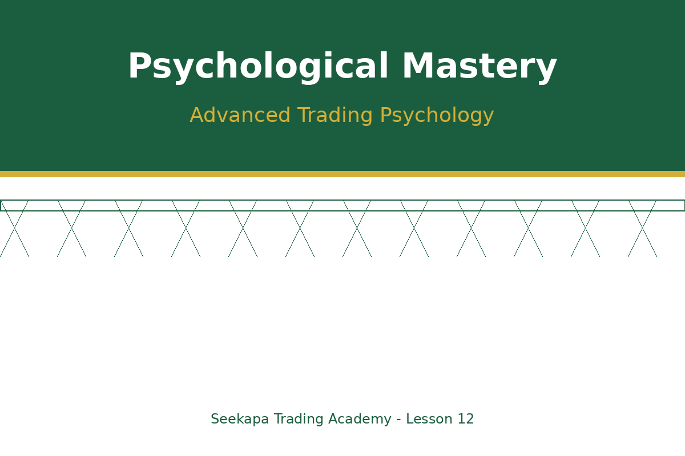
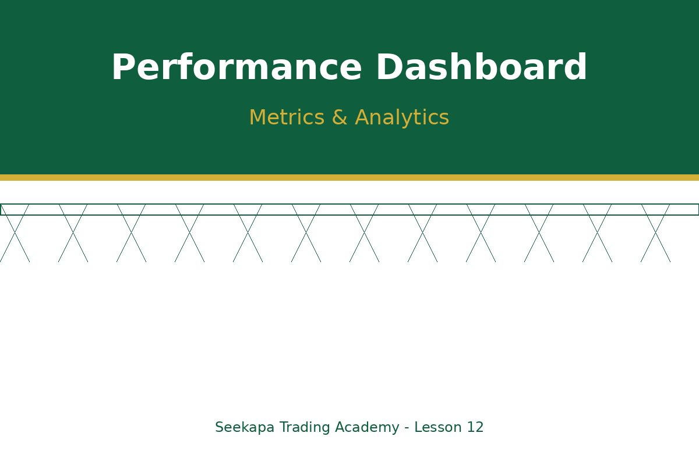
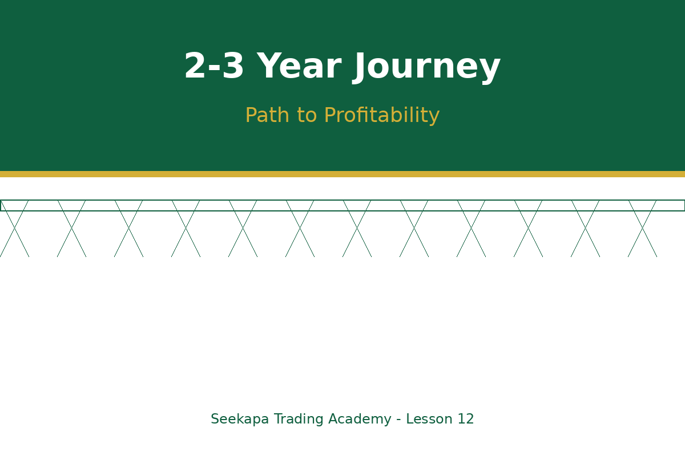

علم النفس المتقدم للتداول والتعلم المستمر
أتقن عقلك والتزم بالتفوق التداول مدى الحياة
الفيديو قيد الإعداد
المدة: دقيقتان | الجودة: 1080p
أهداف التعلم
- تطوير المهارات النفسية المتقدمة للنجاح على المدى الطويل
- إنشاء أطر عمل للتحسين المستمر والتعلم
- بناء العلاقات المجتمعية والإرشادية في التداول
- وضع توقعات واقعية لرحلتك التداولية
تهانينا على الوصول إلى الدرس الأخير! لديك الآن جميع الأدوات التقنية لنجاح التداول. لكن الحقيقة هي أن أكبر تحدٍ لك ليس السوق - بل إتقان نفسك. حتى المتداولون ذوو الخبرة يتعاملون مع الشياطين النفسية التي قد تعطل النجاح. يركز هذا الدرس على علم النفس المتقدم وإنشاء إطار عمل للنمو المستمر.
علم النفس المتقدم للتداول والتحكم العاطفي
حتى المتداولون ذوو الخبرة يتعاملون مع الخوف والطمع والأمل والندم. الخوف يجعلك تخرج من الصفقات الرابحة مبكراً بينما الطمع يحتفظ بالخاسرة طويلاً. الأمل يمنع أخذ الحدود الدنيا، والندم يشوه القرارات المستقبلية. طور روتيناً قبل التداول لتركيز عقلك وتقليل التدخل العاطفي. يمارس العديد من المتداولين الناجحين التأمل أو التمارين أو مراجعة خطتهم قبل جلسات التداول. أنشئ مراسي نفسية - طقوس محددة تثير عقلية منضبطة ومركزة. اعترف بالأنماط العاطفية من خلال الإبلاغ المفصل، مع ملاحظة الحالات العاطفية أثناء القرارات.
تتبع الأداء وتحليل المقاييس
تتبع مقاييس الأداء بما يتجاوز الربح والخسارة البسيطة لفهم صحة التداول الحقيقية. راقب معدل الفوز (نسبة الصفقات الرابحة)، ومتوسط نسبة الربح/الخسارة، والحد الأقصى للانخفاض، ونسبة التزام الخطة. تكشف هذه المقاييس أنماطاً غير مرئية في الربح والخسارة وحدها. قد يكون المتداول رابحاً مع معدل فوز بنسبة 40٪ ونسبة ربح/خسارة بـ 3:1، أو خاسراً مع معدل فوز 60٪ ونسبة 1:2. حلل التداول حسب الإطار الزمني وحالة السوق ونوع الاستراتيجية لتحديد نقاط القوة والضعف.
التعلم المستمر وتطوير المهارات
تتطور الأسواق باستمرار، مما يتطلب التزاماً بالتعلم مدى الحياة. اقرأ الكتب التداولية الكلاسيكية مثل 'Market Wizards' و'Trading in the Zone'. ابق على اطلاع على تطورات السوق من خلال الأخبار المالية والتقارير الاقتصادية. احضر الندوات والدورات عبر الإنترنت لتعلم تقنيات جديدة. انضم إلى مجتمعات التداول والمنتديات لتبادل الأفكار والتعلم من خبرات الآخرين. ابحث عن مرشدين حققوا ما تطمح إليه - تعلم من نجاحهم وأخطائهم. مارس التطوير المتعمد للمهارات بالتركيز على نقاط الضعف المحددة كل شهر.

وضع التوقعات الواقعية والرؤية طويلة الأجل
ضع توقعات واقعية حول رحلة التداول - يحتاج معظم المتداولين إلى 2-3 سنوات ليصبحوا مربحين باستمرار. ستكون هناك نكسات وفترات خسارة وحظات شك. هذا طبيعي ومتوقع. فهم أن التداول الناجح لا يتعلق بالثراء السريع - بل يتعلق بإنشاء دخل مستدام على مدى الوقت من خلال الانضباط وتطوير المهارات. احم رأس مالك خلال مرحلة التعلم بأحجام مراكز صغيرة. تعامل مع التداول المبكر كتعليم مدفوع حيث تعلمك الخسائر الصغيرة دروساً قيمة. احتفل بالانتصارات الصغيرة والمعالم بدلاً من مقارنة نفسك بالآخرين.
اختبار المعرفة
أي مما يلي ليس تحدياً نفسياً مذكوراً في الدرس؟
ما الإطار الزمني الواقعي لمعظم المتداولين ليصبحوا مربحين باستمرار؟
أي مقياس يجمع معدل الفوز مع حجم الأرباح مقابل الخسائر؟
ما الفائدة الأساسية للانضمام إلى مجتمع التداول؟
كيف يجب أن تتعامل مع مرحلة التداول المبكرة؟
النقاط الرئيسية
- إتقان علم النفس هو الحدود الأخيرة التي تفصل المتداولين الجيدين عن العظماء
- تتبع الأداء المفصل يكشف أنماطاً غير مرئية في الربح/الخسارة وحدها
- التعلم المستمر والتكيف ضروريان مع تطور الأسواق
- تسرع مجتمعات التداول والإرشاد النمو وتوفر الدعم
- التوقعات الواقعية والصبر حاسمة للنجاح على المدى الطويل
أنشئ خارطة طريق تطوير التداول الخاصة بك
أنشئ خارطة طريق تطوير التداول لمدة 12 شهراً تتضمن: 1) المهارات المراد تطويرها كل ربع سنة، 2) الكتب المراد قراءتها والدورات المراد إكمالها، 3) مجتمعات التداول المراد الانضمام إليها، 4) معالم الأداء المراد تحقيقها، 5) جدول التقييم الذاتي الشهري. التزم برحلتك بالصبر والمثابرة، وافهم أن التحسينات الصغيرة المتسقة تتضاعف إلى إتقان التداول على مدى الوقت. أهلاً وسهلاً في عالم التداول المحترف!